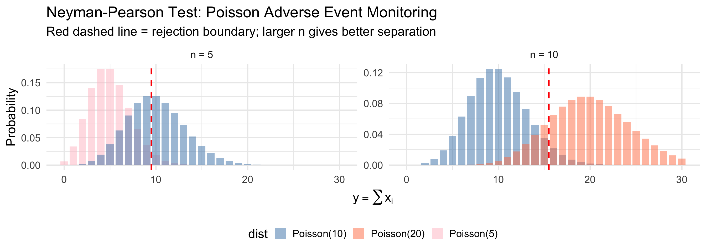
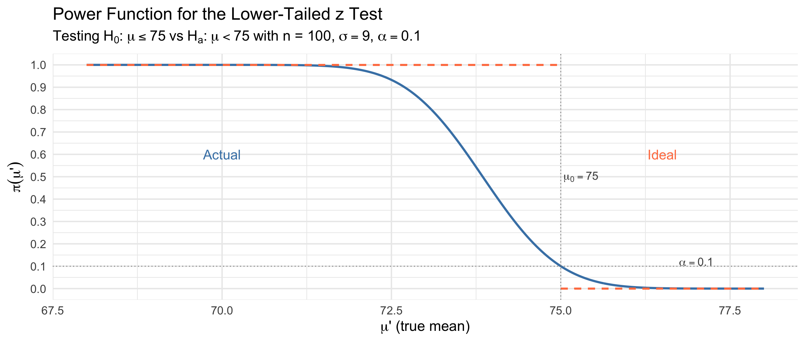
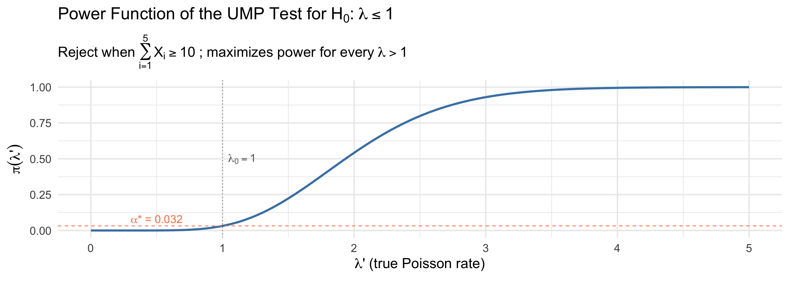
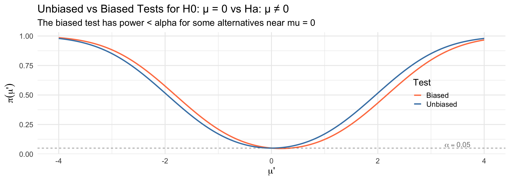
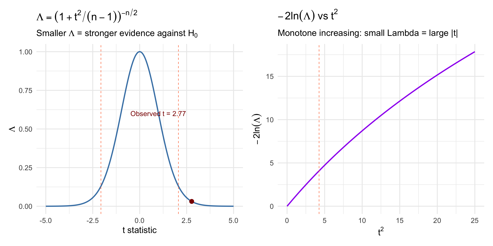
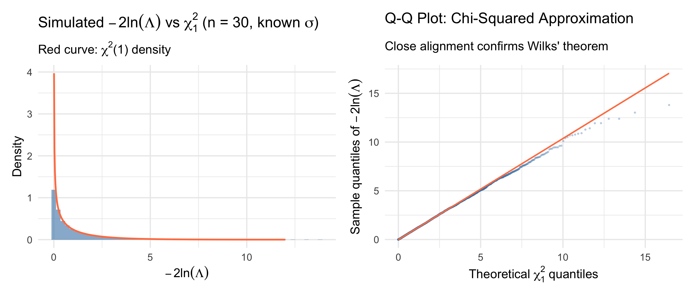
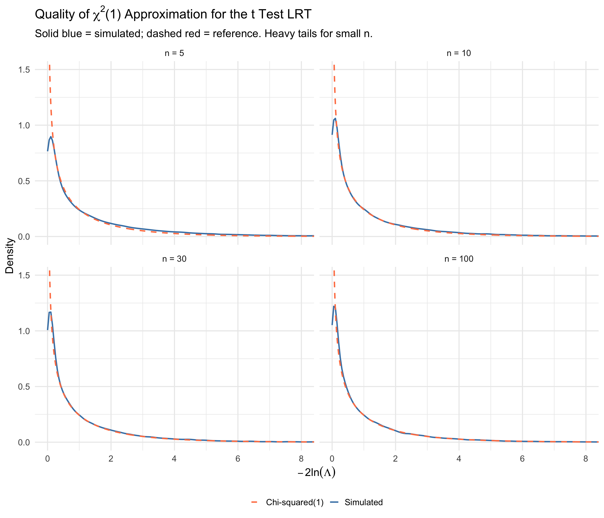
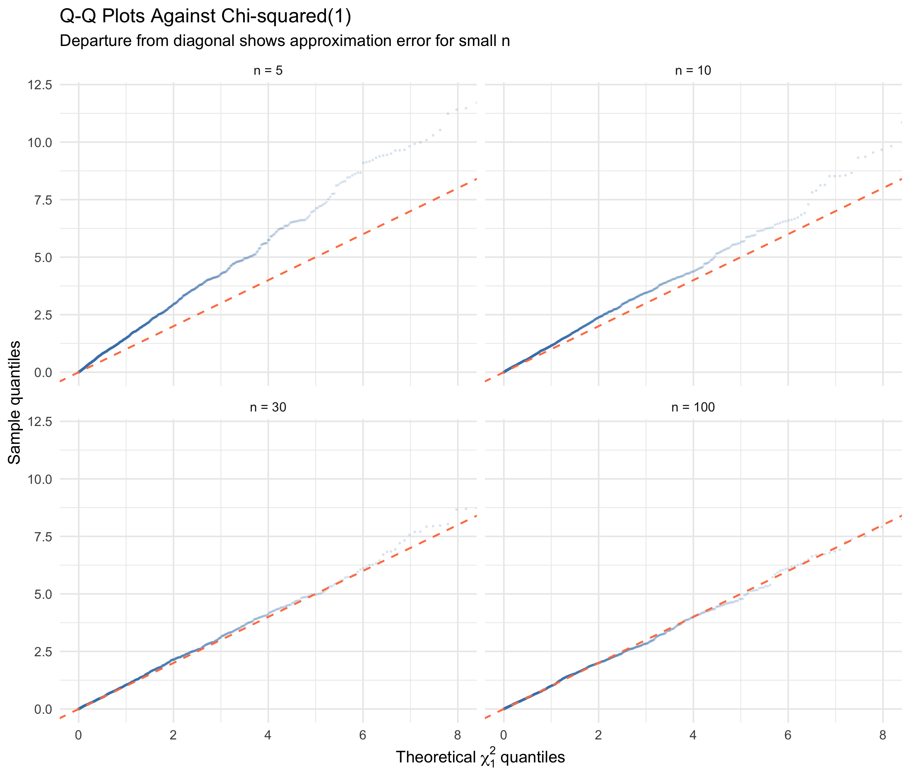

alpha* = 0.03182806 beta* = 0.4579297 Power = 0.5420703 BSTA 551: Statistical Inference
2026-02-18
Lesson 14: P-Values; Power and Sample Size Determination
power.t.test() for planning clinical trialsToday’s Goals:
| Topic | Key Idea | Textbook |
|---|---|---|
| Simple hypotheses | Both \(H_0\) and \(H_a\) fully specify the distribution | Devore 9.5 |
| Neyman-Pearson Lemma | The likelihood ratio test is most powerful for simple \(H_0\) vs simple \(H_a\) | Devore 9.5 |
| Power function | \(\pi(\theta') = P_{\theta'}(\text{Reject } H_0)\) as a function of \(\theta\) | Devore 9.5 |
| UMP tests | Most powerful for every value in the alternative | Devore 9.5 |
| Likelihood ratio tests | General principle for composite hypotheses | Devore 9.5 |
| LRT \(\to\) t test | The one-sample t test is a LRT | Devore 9.5 |
| Large-sample LRT | \(-2\ln(\Lambda) \xrightarrow{d} \chi^2_m\) | Devore 9.5 |
Why This Matters
The Neyman-Pearson Lemma provides the theoretical foundation for optimal hypothesis testing. It tells us why the tests we have been using (z tests, t tests) are the best possible tests in their respective settings. The likelihood ratio principle then gives us a general recipe for constructing tests in new situations.
Recall from Lesson 12:
Definition (Simple and Composite Hypotheses)
A hypothesis is simple if it completely specifies the distribution of the sample \(X_1, \ldots, X_n\). Otherwise, it is composite.
Examples:
We have developed many test procedures: z tests, t tests, score tests, exact binomial tests…
But are these the best tests?
For a test of \(H_0: \theta = \theta_0\) vs \(H_a: \theta = \theta_a\), both simple, there are infinitely many possible rejection regions \(R\). Each one gives:
Goal: Among all tests with \(\alpha \leq \alpha^*\) (controlling Type I error), find the test that minimizes \(\beta\) (equivalently, maximizes power).
Medical Research Motivation
In a clinical trial comparing a new drug to a standard, we want the test that gives us the best chance of detecting a real treatment effect (high power) while maintaining the required significance level. The Neyman-Pearson Lemma tells us exactly how to construct such a test.
Intuition: Given data \(x_1, \ldots, x_n\), which hypothesis makes the data more likely?
Consider the ratio:
\[\Lambda^* = \frac{f(x_1, \ldots, x_n; \theta_a)}{f(x_1, \ldots, x_n; \theta_0)} = \frac{L(\theta_a)}{L(\theta_0)}\]
Natural test: Reject \(H_0\) when \(\Lambda^* \geq k\) for some constant \(k > 0\).
Convention Note
Devore defines the NP ratio as \(L(\theta_a)/L(\theta_0)\) (reject when large). Chihara defines it as \(L(\theta_0)/L(\theta_a)\) (reject when small). Both formulations are equivalent — just inverted. We will primarily follow Devore’s convention in the statement of the lemma.
The Neyman-Pearson Lemma (Devore 9.5)
For testing a simple null hypothesis \(H_0: \theta = \theta_0\) versus a simple alternative \(H_a: \theta = \theta_a\), let \(k\) be a fixed positive number and form the rejection region
\[R^* = \left\{(x_1, \ldots, x_n): \frac{f(x_1, \ldots, x_n; \theta_a)}{f(x_1, \ldots, x_n; \theta_0)} \geq k \right\}\]
Let \(\alpha^* = P((X_1, \ldots, X_n) \in R^* \text{ when } \theta = \theta_0)\) and let \(\beta^*\) denote the Type II error probability.
Then for any other test procedure with Type I error probability \(\alpha \leq \alpha^*\), the Type II error probability must satisfy \(\beta \geq \beta^*\).
In plain language: The test based on the likelihood ratio
Let \(R\) be the rejection region of any test, so that:
\[\alpha = \sum_R f(x_1, \ldots, x_n; \theta_0), \quad \beta = 1 - \sum_R f(x_1, \ldots, x_n; \theta_a)\]
For any constant \(k > 0\), consider the linear combination \(k\alpha + \beta\):
\[k\alpha + \beta = k \sum_R f(\mathbf{x}; \theta_0) + 1 - \sum_R f(\mathbf{x}; \theta_a) = 1 + \sum_R \left[k \cdot f(\mathbf{x}; \theta_0) - f(\mathbf{x}; \theta_a)\right]\]
Key insight: The expression \(k \cdot f(\mathbf{x}; \theta_0) - f(\mathbf{x}; \theta_a)\) can be positive or negative. To minimize \(k\alpha + \beta\), choose \(R\) to include exactly the points where this expression is negative:
\[R^* = \left\{\mathbf{x}: k \cdot f(\mathbf{x}; \theta_0) - f(\mathbf{x}; \theta_a) \leq 0\right\} = \left\{\mathbf{x}: \frac{f(\mathbf{x}; \theta_a)}{f(\mathbf{x}; \theta_0)} \geq k\right\}\]
This is exactly the Neyman-Pearson rejection region! So \(R^*\) minimizes \(k\alpha + \beta\).
We’ve shown: \(k\alpha^* + \beta^* \leq k\alpha + \beta\) for all rejection regions \(R\).
Now, for any test with \(\alpha \leq \alpha^*\):
\[k\alpha^* + \beta^* \leq k\alpha + \beta\]
\[\beta^* \leq \beta + k(\alpha - \alpha^*) \leq \beta + k \cdot 0 = \beta\]
since \(\alpha - \alpha^* \leq 0\) and \(k > 0\).
Therefore \(\beta^* \leq \beta\) for all tests with \(\alpha \leq \alpha^*\). \(\blacksquare\)
What Does This Mean?
The proof works by showing that the NP rejection region simultaneously minimizes both \(\alpha\) and \(\beta\) in a trade-off sense. You cannot do better on one without doing worse on the other. The NP test is on the efficient frontier of the \((\alpha, \beta)\) trade-off.
A pharmaceutical company monitors a biomarker level in patients. Under the current treatment, biomarker levels follow \(N(\mu, 1)\). An elevated biomarker signals a potential adverse event.
Test \(H_0: \mu = 5\) vs \(H_a: \mu = 6\) based on \(n\) patients (known \(\sigma = 1\)).
Applying the Neyman-Pearson Lemma:
\[\frac{L(\mu_a = 6)}{L(\mu_0 = 5)} = \frac{\prod_{i=1}^n \frac{1}{\sqrt{2\pi}} e^{-(x_i - 6)^2/2}}{\prod_{i=1}^n \frac{1}{\sqrt{2\pi}} e^{-(x_i - 5)^2/2}} = e^{\sum (x_i - 6)^2/2 \cdot (-1) + \sum(x_i - 5)^2/2}\]
Simplifying the exponent:
\[= e^{(6 - 5)\sum x_i - n(6^2 - 5^2)/2} = e^{\sum x_i - 11n/2}\]
The rejection region \(\Lambda^* \geq k\) becomes:
\[e^{\sum x_i - 11n/2} \geq k\]
Taking logarithms (since \(\mu_a - \mu_0 = 1 > 0\), the exponential is increasing in \(\sum x_i\)):
\[\sum x_i \geq k' \quad \iff \quad \bar{x} \geq k'' \quad \iff \quad \frac{\bar{x} - 5}{1/\sqrt{n}} \geq c\]
Setting \(c = z_\alpha\), this is exactly the one-sample z test!
Key Result (Devore Example 9.24)
For \(X_1, \ldots, X_n \stackrel{iid}{\sim} N(\mu, \sigma^2)\) with \(\sigma\) known, testing \(H_0: \mu = \mu_0\) vs \(H_a: \mu = \mu_a\) where \(\mu_a > \mu_0\):
The Neyman-Pearson Lemma shows that the one-sample z test (reject when \(z \geq z_\alpha\)) is the most powerful test at level \(\alpha\). Our familiar z test is optimal!
In post-market drug surveillance, the number of adverse events per reporting period is monitored. Suppose \(X_1, \ldots, X_5 \stackrel{iid}{\sim} \text{Poisson}(\lambda)\) represent adverse event counts over 5 periods.
Test \(H_0: \lambda = 1\) (baseline rate) vs \(H_a: \lambda = 2\) (elevated rate).
The Poisson likelihood is: \(f(x_1, \ldots, x_5; \lambda) = e^{-5\lambda} \lambda^{\sum x_i} / \prod x_i!\)
The likelihood ratio:
\[\frac{L(\lambda = 2)}{L(\lambda = 1)} = \frac{e^{-10} \cdot 2^{\sum x_i}}{e^{-5} \cdot 1^{\sum x_i}} = e^{-5} \cdot 2^{\sum x_i} \geq k\]
Taking logarithms: \(\sum x_i \geq c\) where \(c = \ln(k \cdot e^5)/\ln(2)\).
Finding the critical value: Under \(H_0\), \(Y = \sum X_i \sim \text{Poisson}(5)\).
If we use \(c = 10\): \(\alpha^* = P(Y \geq 10 \mid Y \sim \text{Poisson}(5)) = 1 - 0.968 = 0.032\)
If we use \(c = 9\): \(\alpha^* = P(Y \geq 9 \mid Y \sim \text{Poisson}(5)) = 1 - 0.932 = 0.068\)
For \(\alpha \leq 0.05\), we use \(c = 10\), giving \(\alpha^* = 0.032\).
Type II error: Under \(H_a\), \(Y \sim \text{Poisson}(10)\).
\[\beta^* = P(Y < 10 \mid Y \sim \text{Poisson}(10)) = 0.458\]
The Neyman-Pearson guarantee: Any other test with \(\alpha \leq 0.032\) must have \(\beta \geq 0.458\).
The power is only \(1 - 0.458 = 0.542\). Why so low?
Because \(n = 5\) is too small to discriminate between \(\lambda = 1\) and \(\lambda = 2\).
For \(n = 10\): best test with \(\alpha \leq 0.05\) uses \(c = 16\), giving \(\alpha^* = 0.049\) and \(\beta^* = 0.157\) (power = 0.843).
# Compare rejection regions for n=5 and n=10
tibble(y = 0:30) |>
mutate(
`n = 5, Poisson(5)` = dpois(y, 5),
`n = 5, Poisson(10)` = dpois(y, 10),
`n = 10, Poisson(10)` = dpois(y, 10),
`n = 10, Poisson(20)` = dpois(y, 20)
) |>
pivot_longer(-y, names_to = "distribution", values_to = "prob") |>
separate(distribution, into = c("sample_size", "dist"), sep = ", ") |>
ggplot(aes(x = y, y = prob, fill = dist)) +
geom_col(position = "identity", alpha = 0.5, width = 0.8) +
geom_vline(data = tibble(sample_size = c("n = 5", "n = 10"),
cutoff = c(10, 16)),
aes(xintercept = cutoff - 0.5), linetype = "dashed",
color = "red", linewidth = 1) +
facet_wrap(~sample_size, scales = "free") +
scale_fill_manual(values = c("steelblue", "coral", "steelblue", "coral")) +
labs(x = expression(y == sum(x[i])), y = "Probability",
title = "Neyman-Pearson Test: Poisson Adverse Event Monitoring",
subtitle = "Red dashed line = rejection boundary; larger n gives better separation") +
theme(legend.position = "bottom")
In an oncology trial, patient survival times follow \(\text{Exp}(\lambda)\). We want to test whether the hazard rate has increased from a historical baseline.
Test \(H_0: \lambda = 8\) vs \(H_a: \lambda = 10\) based on \(n = 9\) patients.
Likelihood ratio:
\[\frac{L(\lambda = 8)}{L(\lambda = 10)} = \frac{8^9 e^{-8\sum x_i}}{10^9 e^{-10\sum x_i}} = (0.8)^9 e^{2\sum x_i}\]
(Note: Chihara uses \(L(\theta_0)/L(\theta_a)\), rejecting for small values.)
Reject \(H_0\) when this ratio is small, i.e., when \(\sum x_i < c_2\).
Definition (Power Function, Devore 9.5)
Let \(\Omega_0\) and \(\Omega_a\) be two disjoint sets of possible values of \(\theta\). For testing \(H_0: \theta \in \Omega_0\) vs \(H_a: \theta \in \Omega_a\) with rejection region \(R\), the power function is:
\[\pi(\theta') = P_{\theta'}((X_1, \ldots, X_n) \in R)\]
the probability of rejecting \(H_0\) as a function of \(\theta\).
Connection to error probabilities:
\[\pi(\theta') = \begin{cases} P(\text{Type I error}) = \alpha(\theta') & \text{when } \theta' \in \Omega_0 \\[4pt] 1 - P(\text{Type II error}) = 1 - \beta(\theta') & \text{when } \theta' \in \Omega_a \end{cases}\]
Ideal power function (unachievable in practice):
\[\pi(\theta') = \begin{cases} 0 & \text{when } \theta' \in \Omega_0 \\ 1 & \text{when } \theta' \in \Omega_a \end{cases}\]
Example (Devore 9.25 adapted): Blood pressure reduction (mmHg) with a new antihypertensive follows \(N(\mu, 81)\). Test \(H_0: \mu \leq 75\) vs \(H_a: \mu < 75\) with \(n = 100\), \(\alpha = 0.10\).
Rejection region: \(z \leq -z_{0.10} = -1.28\), i.e., \(\bar{x} \leq 73.848\).
# Power function for the z test
sigma <- 9
n <- 100
se <- sigma / sqrt(n)
x_crit <- 75 - 1.28 * se # 73.848
mu_prime <- seq(68, 78, length.out = 500)
power_actual <- pnorm((x_crit - mu_prime) / se)
power_df <- tibble(mu = mu_prime, power = power_actual)
ggplot(power_df, aes(x = mu, y = power)) +
geom_line(linewidth = 1.3, color = "steelblue") +
# Ideal power function
geom_segment(aes(x = 68, xend = 75, y = 1, yend = 1),
linetype = "dashed", color = "coral", linewidth = 1) +
geom_segment(aes(x = 75, xend = 78, y = 0, yend = 0),
linetype = "dashed", color = "coral", linewidth = 1) +
geom_vline(xintercept = 75, linetype = "dotted", color = "gray50") +
geom_hline(yintercept = 0.10, linetype = "dotted", color = "gray50") +
annotate("text", x = 76.5, y = 0.6, label = "Ideal", color = "coral", size = 6) +
annotate("text", x = 70, y = 0.6, label = "Actual", color = "steelblue", size = 6) +
annotate("text", x = 77, y = 0.12,
label = expression(alpha == 0.10), size = 5, color = "gray30") +
annotate("text", x = 75.3, y = 0.5,
label = expression(mu[0] == 75), size = 5, color = "gray30") +
scale_y_continuous(breaks = seq(0, 1, 0.1)) +
labs(x = expression(mu * "' (true mean)"), y = expression(pi(mu * "'")),
title = "Power Function for the Lower-Tailed z Test",
subtitle = bquote("Testing" ~ H[0]*":" ~ mu <= 75 ~ "vs" ~ H[a]*":" ~ mu < 75 ~ "with n = 100," ~ sigma == 9*"," ~ alpha == 0.10))
From the figure, we observe several important properties:
Clinical Implication
In designing a clinical trial, we need to choose \(n\) large enough so that the power function is acceptably close to 1 at the minimum clinically important difference. This connects directly to the sample size calculations from Lesson 14.
The NP Lemma handles simple vs simple. What about composite alternatives?
Definition (Uniformly Most Powerful Test)
A test is uniformly most powerful (UMP) at level \(\alpha\) if it maximizes \(\pi(\theta')\) for every \(\theta' \in \Omega_a\), subject to \(\pi(\theta') \leq \alpha\) for all \(\theta' \in \Omega_0\).
When do UMP tests exist? If the NP rejection region does not depend on the specific alternative \(\theta_a\), then the same test is most powerful for every \(\theta_a \in \Omega_a\).
Returning to the Poisson adverse event example with \(n = 5\):
Test \(H_0: \lambda \leq 1\) vs \(H_a: \lambda > 1\).
For any specific \(\lambda_a > 1\), the NP test of \(H_0: \lambda = 1\) vs \(H_a: \lambda = \lambda_a\) rejects when \(\sum x_i \geq c\).
Key observation: The rejection region \(\sum x_i \geq 10\) is the same regardless of which \(\lambda_a > 1\) we choose! (The critical value \(c\) is determined by \(H_0\) alone.)
Therefore, this test is UMP at level \(\alpha^* = 0.032\).
# Power function for the UMP Poisson test
lambda_prime <- seq(0, 5, length.out = 300)
power_poisson <- 1 - ppois(9, lambda = 5 * lambda_prime)
ggplot(tibble(lambda = lambda_prime, power = power_poisson),
aes(x = lambda, y = power)) +
geom_line(linewidth = 1.3, color = "steelblue") +
geom_vline(xintercept = 1, linetype = "dotted", color = "gray50") +
geom_hline(yintercept = 0.032, linetype = "dashed", color = "coral") +
annotate("text", x = 0.5, y = 0.08,
label = expression(alpha * "* = 0.032"), color = "coral", size = 5) +
annotate("text", x = 1.15, y = 0.5,
label = expression(lambda[0] == 1), color = "gray40", size = 5) +
labs(x = expression(lambda * "' (true Poisson rate)"),
y = expression(pi(lambda * "'")),
title = bquote("Power Function of the UMP Test for" ~ H[0]*":" ~ lambda <= 1),
subtitle = bquote("Reject when" ~ sum(X[i], i==1, 5) >= 10 ~ "; maximizes power for every" ~ lambda > 1))
Important Limitation
UMP tests are fairly rare, especially in the commonly encountered situation of testing a two-sided alternative.
Example: Testing \(H_0: \mu = \mu_0\) vs \(H_a: \mu \neq \mu_0\) with \(X_i \stackrel{iid}{\sim} N(\mu, \sigma^2)\), \(\sigma\) known.
Resolution: Restrict attention to unbiased tests (tests where \(\pi(\theta') \geq \alpha\) for all \(\theta' \in \Omega_a\)). Under this restriction:
Definition (Unbiased Test)
A test is unbiased if the power under any alternative is at least as large as the power under any null value:
\[\inf_{\theta' \in \Omega_a} \pi(\theta') \geq \sup_{\theta' \in \Omega_0} \pi(\theta')\]
Equivalently: we are at least as likely to reject \(H_0\) when it is false as when it is true.
Why is this desirable? A biased test would reject \(H_0\) less often for some alternatives than it does when \(H_0\) is true — that would defeat the purpose of the test!
# Biased vs unbiased test illustration
mu_seq <- seq(-4, 4, length.out = 500)
n_ex <- 16; sigma_ex <- 4; se_ex <- sigma_ex / sqrt(n_ex)
# Unbiased (symmetric) rejection region
power_unbiased <- pnorm((-1.96 * se_ex - mu_seq) / se_ex) +
1 - pnorm((1.96 * se_ex - mu_seq) / se_ex)
# Biased (asymmetric) rejection region: reject if x_bar > 2.17 or x_bar < -1.81
power_biased <- pnorm((-1.81 * se_ex - mu_seq) / se_ex) +
1 - pnorm((2.17 * se_ex - mu_seq) / se_ex)
tibble(mu = mu_seq, Unbiased = power_unbiased, Biased = power_biased) |>
pivot_longer(-mu, names_to = "Test", values_to = "Power") |>
ggplot(aes(x = mu, y = Power, color = Test)) +
geom_line(linewidth = 1.2) +
geom_hline(yintercept = 0.05, linetype = "dashed", color = "gray50") +
scale_color_manual(values = c("coral", "steelblue")) +
annotate("text", x = 3.5, y = 0.08, label = expression(alpha == 0.05),
color = "gray50", size = 5) +
labs(x = expression(mu * "'"), y = expression(pi(mu * "'")),
title = "Unbiased vs Biased Tests for H0: \u03bc = 0 vs Ha: \u03bc \u2260 0",
subtitle = "The biased test has power < alpha for some alternatives near mu = 0") +
theme(legend.position = c(0.85, 0.5))
The NP Lemma handles simple vs simple hypotheses. But in practice, we need tests for:
\[H_0: \theta \in \Omega_0 \quad \text{vs} \quad H_a: \theta \in \Omega_a\]
where one or both hypotheses may be composite.
The likelihood ratio principle provides a general recipe for constructing test statistics in virtually any testing situation.
The Likelihood Ratio Test (LRT) Procedure
\[\Lambda = \frac{L(\hat{\theta}_0)}{L(\hat{\theta}_{mle})}\]
\[\Lambda = \frac{L(\hat{\theta}_0)}{L(\hat{\theta}_{mle})} = \frac{\max_{\theta \in \Omega_0} L(\theta)}{\max_{\theta \in \Omega} L(\theta)}\]
Key properties:
Connection to NP Lemma: When both hypotheses are simple (\(\Omega_0 = \{\theta_0\}\) and \(\Omega_a = \{\theta_a\}\)):
\[\Lambda = \frac{L(\theta_0)}{\max\{L(\theta_0), L(\theta_a)\}} = \begin{cases} L(\theta_0)/L(\theta_a) & \text{if } L(\theta_a) \geq L(\theta_0) \\[2pt] 1 & \text{otherwise} \end{cases}\]
This is the reciprocal of the NP statistic (when \(H_a\) is more likely), so rejecting for small \(\Lambda\) is equivalent to rejecting for large \(\Lambda^*\).
Systolic blood pressure readings follow \(N(\mu, 100)\) (known \(\sigma = 10\)). A clinical trial tests whether a new treatment changes the population mean from a target value.
\[H_0: \mu = \mu_0 \quad \text{vs} \quad H_a: \mu \neq \mu_0\]
Step 1: Unrestricted MLE. Over \(\Omega = \mathbb{R}\): \(\hat{\mu}_{mle} = \bar{x}\)
Step 2: Restricted MLE. Over \(\Omega_0 = \{\mu_0\}\): \(\hat{\mu}_0 = \mu_0\)
Step 3: Likelihood ratio.
\[\Lambda = \frac{L(\mu_0)}{L(\bar{x})} = \frac{\prod \frac{1}{\sqrt{2\pi}\sigma} e^{-(x_i - \mu_0)^2/(2\sigma^2)}}{\prod \frac{1}{\sqrt{2\pi}\sigma} e^{-(x_i - \bar{x})^2/(2\sigma^2)}} = e^{-\frac{1}{2\sigma^2}\left[\sum(x_i - \mu_0)^2 - \sum(x_i - \bar{x})^2\right]}\]
Since \(\sum(x_i - \mu_0)^2 = \sum(x_i - \bar{x})^2 + n(\bar{x} - \mu_0)^2\):
\[\Lambda = e^{-n(\bar{x} - \mu_0)^2 / (2\sigma^2)}\]
Reject when \(\Lambda \leq k\):
\[e^{-n(\bar{x} - \mu_0)^2/(2\sigma^2)} \leq k\]
Taking \(-\ln\) of both sides:
\[\frac{n(\bar{x} - \mu_0)^2}{2\sigma^2} \geq -\ln(k) = c'\]
\[\left|\frac{\bar{x} - \mu_0}{\sigma/\sqrt{n}}\right| \geq c\]
This is the two-sided z test! Setting \(c = z_{\alpha/2}\) gives the test at level \(\alpha\).
Key Result
The likelihood ratio test for \(H_0: \mu = \mu_0\) vs \(H_a: \mu \neq \mu_0\) when \(\sigma\) is known is exactly the two-sided z test. The LRT principle automatically “discovers” the z test.
Now suppose \(X_1, \ldots, X_n \stackrel{iid}{\sim} N(\mu, \sigma^2)\) with \(\sigma\) unknown.
\[H_0: \mu = \mu_0 \quad \text{vs} \quad H_a: \mu \neq \mu_0\]
Step 1: Unrestricted MLE over \(\Omega = \{(\mu, \sigma^2): \mu \in \mathbb{R}, \sigma^2 > 0\}\):
\[\hat{\mu}_{mle} = \bar{x}, \quad \hat{\sigma}^2_{mle} = \frac{1}{n}\sum(x_i - \bar{x})^2\]
Step 2: Restricted MLE over \(\Omega_0 = \{(\mu_0, \sigma^2): \sigma^2 > 0\}\):
\[\hat{\mu}_0 = \mu_0, \quad \hat{\sigma}^2_0 = \frac{1}{n}\sum(x_i - \mu_0)^2\]
Note: under \(H_0\), we still estimate \(\sigma^2\) by MLE, but with \(\mu\) fixed at \(\mu_0\).
Step 3: Likelihood ratio. After substitution and simplification:
\[\Lambda = \left[\frac{\hat{\sigma}^2_{mle}}{\hat{\sigma}^2_0}\right]^{n/2} = \left[\frac{\sum(x_i - \bar{x})^2}{\sum(x_i - \mu_0)^2}\right]^{n/2}\]
Since \(\sum(x_i - \mu_0)^2 = \sum(x_i - \bar{x})^2 + n(\bar{x} - \mu_0)^2\):
\[\Lambda = \left[\frac{1}{1 + \frac{n(\bar{x} - \mu_0)^2}{\sum(x_i - \bar{x})^2}}\right]^{n/2} = \left[\frac{1}{1 + t^2/(n-1)}\right]^{n/2}\]
where \(t = \frac{\bar{x} - \mu_0}{s/\sqrt{n}}\) is the t statistic.
Reject when \(\Lambda\) is small \(\iff\) \(t^2/(n-1)\) is large \(\iff\) \(|t| \geq c\).
Setting \(c = t_{\alpha/2, n-1}\) gives the one-sample t test.
Key Result
The likelihood ratio test for \(H_0: \mu = \mu_0\) vs \(H_a: \mu \neq \mu_0\) when \(\sigma\) is unknown is exactly the one-sample t test. Many classical tests can be derived from the LRT principle.
# Demonstrate that the LRT statistic is a monotone function of |t|
set.seed(551)
n_sim <- 25
mu_0 <- 120 # target systolic BP
# Simulated clinical trial data: true mu = 125
x_data <- rnorm(n_sim, mean = 125, sd = 15)
x_bar <- mean(x_data)
s <- sd(x_data)
t_stat <- (x_bar - mu_0) / (s / sqrt(n_sim))
# Compute Lambda for a range of hypothetical t values
t_range <- seq(-5, 5, length.out = 500)
lambda_vals <- (1 / (1 + t_range^2 / (n_sim - 1)))^(n_sim / 2)
p1 <- ggplot(tibble(t = t_range, Lambda = lambda_vals), aes(x = t, y = Lambda)) +
geom_line(linewidth = 1.2, color = "steelblue") +
geom_vline(xintercept = c(-qt(0.025, n_sim - 1), qt(0.025, n_sim - 1)),
linetype = "dashed", color = "coral") +
geom_point(data = tibble(t = t_stat,
Lambda = (1 / (1 + t_stat^2 / (n_sim - 1)))^(n_sim / 2)),
size = 4, color = "darkred") +
annotate("text", x = t_stat - 0.3, y = 0.6,
label = paste0("Observed t = ", round(t_stat, 2)),
color = "darkred", size = 5, hjust = 1) +
labs(x = "t statistic", y = expression(Lambda),
title = expression(Lambda == (1 + t^2/(n-1))^{-n/2}),
subtitle = expression("Smaller " * Lambda * " = stronger evidence against " * H[0]))
# Show the relationship between -2ln(Lambda) and t^2
neg2lnL <- -n_sim * log(1 + t_range^2 / (n_sim - 1))
p2 <- ggplot(tibble(t2 = t_range^2, neg2lnL = -neg2lnL),
aes(x = t2, y = neg2lnL)) +
geom_line(linewidth = 1.2, color = "purple") +
geom_vline(xintercept = qt(0.975, n_sim - 1)^2,
linetype = "dashed", color = "coral") +
labs(x = expression(t^2), y = expression(-2 * ln(Lambda)),
title = expression(-2 * ln(Lambda) ~ "vs" ~ t^2),
subtitle = "Monotone increasing: small Lambda = large |t|")
p1 + p2
A Phase III clinical trial tests whether a new cholesterol-lowering drug changes mean LDL from baseline \(\mu_0 = 130\) mg/dL. Data from \(n = 30\) patients:
Sample mean: 123.23 mg/dLSample SD: 22.59 mg/dLt statistic: -1.64 Lambda: 0.26424 -2 ln(Lambda): 2.662 t^2: 2.691 P-value (t): 0.1117 In many situations, the LRT rejection region \(\Lambda \leq k\) cannot be expressed in terms of a simple, familiar statistic. A powerful large-sample result resolves this.
Theorem (Wilks’ Theorem, Devore 9.5)
If the sample size \(n\) is sufficiently large, then under \(H_0\):
\[-2\ln(\Lambda) \xrightarrow{d} \chi^2_m\]
where \(m\) is the difference between the number of free parameters in \(\Omega\) and the number of free parameters in \(\Omega_0\).
How to use it: Since \(0 \leq \Lambda \leq 1\), we have \(-2\ln(\Lambda) \geq 0\). Reject \(H_0\) when:
\[-2\ln(\Lambda) \geq \chi^2_{\alpha, m}\]
The degrees of freedom \(m\):
| Setting | \(\Omega\) | \(\Omega_0\) | \(m\) |
|---|---|---|---|
| \(N(\mu, \sigma^2)\), \(\sigma\) known, \(H_0: \mu = \mu_0\) | 1 (\(\mu\)) | 0 | 1 |
| \(N(\mu, \sigma^2)\), \(\sigma\) unknown, \(H_0: \mu = \mu_0\) | 2 (\(\mu, \sigma^2\)) | 1 (\(\sigma^2\)) | 1 |
| Bivariate normal, \(H_0: \mu_1 = \mu_2\) and \(\sigma_1 = \sigma_2\) | 5 (\(\mu_1, \mu_2, \sigma_1, \sigma_2, \rho\)) | 3 (\(\mu, \sigma, \rho\)) | 2 |
| Multinomial with \(k\) categories, \(H_0: p_i = p_{i,0}\) | \(k - 1\) | 0 | \(k - 1\) |
Practical Rule
Count the number of parameters that are “free” (need to be estimated) under each hypothesis. The difference is \(m\).
The Laplace (double exponential) distribution with pdf \(f(x; \theta) = \frac{1}{2}e^{-|x - \theta|}\) is sometimes used to model measurement errors. Test \(H_0: \theta = 0\) vs \(H_a: \theta \neq 0\).
Under \(\Omega\): The MLE of \(\theta\) is the sample median \(\tilde{x}\) (minimizes \(\sum |x_i - \theta|\)).
Under \(\Omega_0\): \(\theta = 0\) (no estimation needed).
\[\Lambda = \frac{(1/2)^n e^{-\sum|x_i|}}{(1/2)^n e^{-\sum|x_i - \tilde{x}|}} = e^{-(\sum|x_i| - \sum|x_i - \tilde{x}|)}\]
\[-2\ln(\Lambda) = 2\left(\sum|x_i| - \sum|x_i - \tilde{x}|\right)\]
Degrees of freedom: \(m = 1 - 0 = 1\), so \(-2\ln(\Lambda) \stackrel{\cdot}{\sim} \chi^2_1\) under \(H_0\).
Reject \(H_0\) when \(-2\ln(\Lambda) \geq \chi^2_{\alpha, 1}\).
# Simulate LRT for normal mean (known variance) and check chi-squared approximation
set.seed(551)
n_obs <- 30
n_rep <- 10000
mu_0 <- 0
sigma_known <- 1
# Simulate under H_0
neg2lnL_sims <- replicate(n_rep, {
x <- rnorm(n_obs, mean = mu_0, sd = sigma_known)
x_bar <- mean(x)
# -2ln(Lambda) = n * (x_bar - mu_0)^2 / sigma^2 for known variance case
n_obs * (x_bar - mu_0)^2 / sigma_known^2
})
# Compare to chi-squared(1)
chi2_theoretical <- seq(0.01, 12, length.out = 500)
p1 <- ggplot(tibble(stat = neg2lnL_sims), aes(x = stat)) +
geom_histogram(aes(y = after_stat(density)), bins = 60,
fill = "steelblue", alpha = 0.6) +
geom_line(data = tibble(x = chi2_theoretical, y = dchisq(chi2_theoretical, df = 1)),
aes(x = x, y = y), color = "coral", linewidth = 1.2) +
labs(x = expression(-2 * ln(Lambda)), y = "Density",
title = expression("Simulated " * -2 * ln(Lambda) * " vs " * chi[1]^2 *
" (n = 30, known " * sigma * ")"),
subtitle = expression("Red curve: " * chi^2 * "(1) density"))
# Q-Q plot
p2 <- ggplot(tibble(stat = neg2lnL_sims), aes(sample = stat)) +
stat_qq(distribution = qchisq, dparams = list(df = 1),
color = "steelblue", alpha = 0.3, size = 0.8) +
stat_qq_line(distribution = qchisq, dparams = list(df = 1),
color = "coral", linewidth = 1) +
labs(x = expression("Theoretical " * chi[1]^2 * " quantiles"),
y = expression("Sample quantiles of " * -2 * ln(Lambda)),
title = "Q-Q Plot: Chi-Squared Approximation",
subtitle = "Close alignment confirms Wilks' theorem")
p1 + p2
# Check chi-squared approximation quality for different n
# Normal mean, unknown variance -> -2ln(Lambda) = n*ln(1 + t^2/(n-1))
set.seed(551)
n_rep <- 50000
sample_sizes <- c(5, 10, 30, 100)
sim_results <- map_dfr(sample_sizes, function(n_val) {
stats <- replicate(n_rep, {
x <- rnorm(n_val, mean = 0, sd = 1)
t_stat <- mean(x) / (sd(x) / sqrt(n_val))
n_val * log(1 + t_stat^2 / (n_val - 1))
})
tibble(n = n_val, n_label = paste0("n = ", n_val), stat = stats)
})
# Overlay: simulated density vs chi-squared(1) reference
chi2_ref <- tibble(
x = seq(0.01, 10, length.out = 500),
y = dchisq(x, df = 1)
)
p_facet <- sim_results |>
mutate(n_label = factor(n_label, levels = paste0("n = ", sample_sizes))) |>
ggplot(aes(x = stat)) +
geom_density(aes(color = "Simulated"), linewidth = 1.1, key_glyph = "path") +
geom_line(data = chi2_ref |> crossing(n_label = factor(paste0("n = ", sample_sizes),
levels = paste0("n = ", sample_sizes))),
aes(x = x, y = y, color = "Chi-squared(1)"), linewidth = 1.1,
linetype = "dashed", key_glyph = "path") +
facet_wrap(~n_label) +
scale_color_manual(values = c("Simulated" = "steelblue", "Chi-squared(1)" = "coral")) +
coord_cartesian(xlim = c(0, 8), ylim = c(0, 1.5)) +
labs(x = expression(-2 * ln(Lambda)), y = "Density",
title = expression("Quality of " * chi^2 * "(1) Approximation for the t Test LRT"),
subtitle = "Solid blue = simulated; dashed red = reference. Heavy tails for small n.",
color = NULL) +
theme(legend.position = "bottom")
p_facet
# Also show Q-Q plots against chi-squared(1) for each n
p_qq <- sim_results |>
mutate(n_label = factor(n_label, levels = paste0("n = ", sample_sizes))) |>
group_by(n_label) |>
slice_sample(n = 2000) |>
ungroup() |>
ggplot(aes(sample = stat)) +
stat_qq(distribution = qchisq, dparams = list(df = 1),
color = "steelblue", alpha = 0.15, size = 0.7) +
geom_abline(slope = 1, intercept = 0, color = "coral",
linewidth = 1, linetype = "dashed") +
facet_wrap(~n_label) +
coord_cartesian(xlim = c(0, 8), ylim = c(0, 12)) +
labs(x = expression("Theoretical " * chi[1]^2 * " quantiles"),
y = "Sample quantiles",
title = "Q-Q Plots Against Chi-squared(1)",
subtitle = "Departure from diagonal shows approximation error for small n")
p_qq
library(DiagrammeR)
grViz("
digraph testing_framework {
graph [rankdir=TB, bgcolor=transparent, fontsize=20]
node [shape=box, style=filled, fontsize=16, fontname='Helvetica']
# Top level
A [label='Hypothesis Testing Problem\\nH₀: θ ∈ Ω₀ vs Hₐ: θ ∈ Ωₐ',
fillcolor='#3498db', fontcolor=white, width=4]
# Decision node
B [label='Are both hypotheses simple?',
fillcolor='#f39c12', fontcolor=white, shape=diamond, width=3]
# Simple path
C [label='Neyman-Pearson Lemma\\nLikelihood ratio: L(θₐ)/L(θ₀) ≥ k\\nMost Powerful Test',
fillcolor='#27ae60', fontcolor=white, width=3.5]
# Composite path
D [label='Likelihood Ratio Test (LRT)\\nΛ = L(θ̂₀) / L(θ̂ₘₗₑ) ≤ k',
fillcolor='#8e44ad', fontcolor=white, width=3.5]
# UMP
E [label='Same rejection region\\nfor all θₐ ∈ Ωₐ?',
fillcolor='#f39c12', fontcolor=white, shape=diamond, width=3]
F [label='UMP Test\\n(one-sided alternatives;\\nKarlin-Rubin Theorem)',
fillcolor='#27ae60', fontcolor=white, width=3]
G [label='No UMP exists\\n(two-sided alternatives)\\nUse UMP Unbiased or LRT',
fillcolor='#e74c3c', fontcolor=white, width=3.5]
# LRT outcomes
H [label='Exact distribution\\nknown?',
fillcolor='#f39c12', fontcolor=white, shape=diamond, width=3]
I [label='Use exact test\\n(z test, t test, F test)',
fillcolor='#27ae60', fontcolor=white, width=3]
J [label='Large-sample approx.\\n-2ln(Λ) ~ χ²ₘ',
fillcolor='#16a085', fontcolor=white, width=3]
A -> B
B -> C [label=' Yes', fontsize=14]
B -> D [label=' No', fontsize=14]
C -> E
E -> F [label=' Yes', fontsize=14]
E -> G [label=' No', fontsize=14]
D -> H
H -> I [label=' Yes', fontsize=14]
H -> J [label=' No', fontsize=14]
}
")| Test | Hypotheses | LRT Produces | Exact or Approx? |
|---|---|---|---|
| One-sample z | \(H_0: \mu = \mu_0\), \(\sigma\) known | \(z = \frac{\bar{x} - \mu_0}{\sigma/\sqrt{n}}\) | Exact |
| One-sample t | \(H_0: \mu = \mu_0\), \(\sigma\) unknown | \(t = \frac{\bar{x} - \mu_0}{s/\sqrt{n}}\) | Exact |
| Pooled two-sample t | \(H_0: \mu_1 = \mu_2\), equal \(\sigma\) | Pooled \(t\) statistic | Exact |
| Chi-squared goodness-of-fit | \(H_0: p_i = p_{i,0}\) | \(\sum (O_i - E_i)^2/E_i\) | Large-sample |
| F test (ANOVA) | \(H_0: \mu_1 = \cdots = \mu_k\) | \(F\) ratio | Exact (normal) |
Key Insight
The LRT principle is a unifying framework. Many of the “named” tests from introductory statistics — z tests, t tests, F tests, chi-squared tests — can all be derived as likelihood ratio tests. The LRT gives us a principled way to construct new tests for situations not covered by standard formulas.
Neyman-Pearson Lemma:
UMP Tests:
Likelihood Ratio Tests:
Today’s Main Points
Common mistakes to avoid:
Next class (Lesson 16): Further Aspects of Hypothesis Testing; Bootstrap Hypothesis Testing (Devore 9.6, C&H Chapter 8)
Thank you!
Lesson 15 - Neyman-Pearson Lemma; Likelihood Ratio Tests